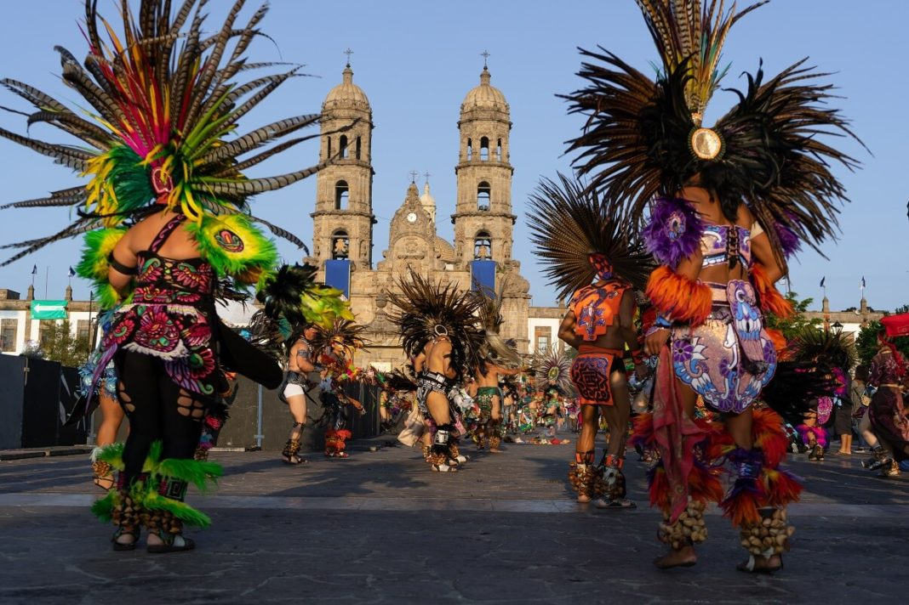
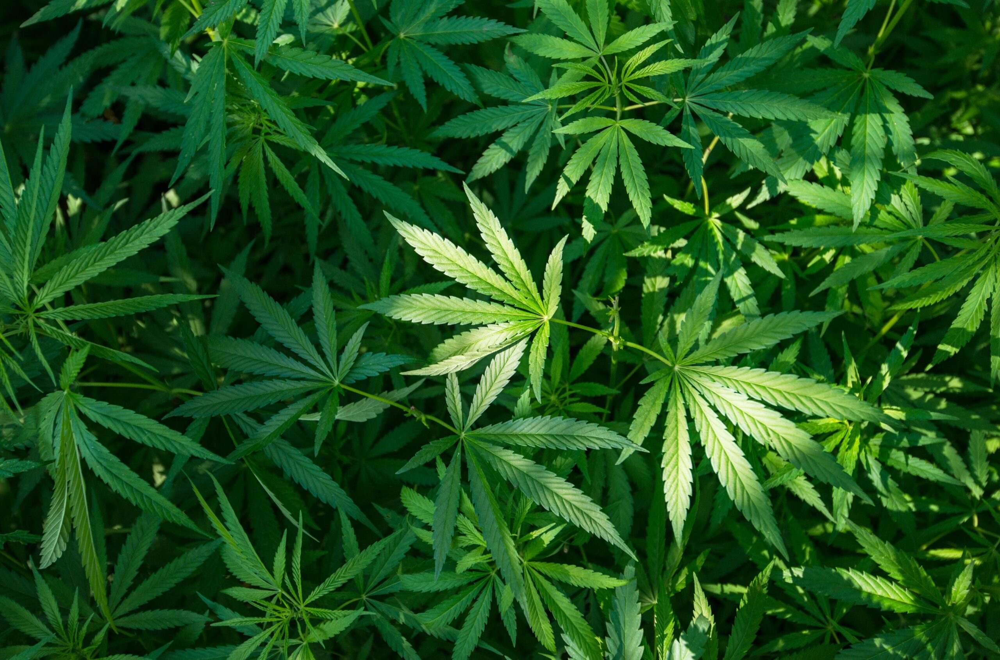

Ubicación: Xalisco está ubicado en la zona metropolitana de Tepic, en el estado de Nayarit, México. Es conocido por su paisaje montañoso y su clima ideal para la agricultura.
Historia: La historia de Xalisco se remonta a la época prehispánica, cuando la región era habitada por grupos indígenas de la cultura caxcana y tecuala. Durante la época colonial, Xalisco formó parte de la alcaldía mayor de Xalisco y posteriormente del partido de Compostela. En 1824, con la creación del estado de Jalisco, Xalisco pasó a formar parte de este estado. Sin embargo, en 1917, con la creación del estado de Nayarit, Xalisco se convirtió en uno de sus municipios. Uno de los hechos más relevantes de la historia de Xalisco ocurrió en 1910, cuando se llevó a cabo la Revolución Mexicana. En ese entonces, Xalisco fue escenario de diversos enfrentamientos entre las fuerzas revolucionarias y las fuerzas federales. Otro acontecimiento importante en la historia de Xalisco fue la construcción de la carretera federal 15, que atraviesa el municipio y que ha impulsado el desarrollo económico de la región. Además, en los últimos años se ha fortalecido la actividad turística en Xalisco, gracias a sus atractivos naturales y culturales. En la actualidad, Xalisco es un municipio que se destaca por su producción agrícola, en especial la producción de frutas como el mango y la papaya. También cuenta con una rica tradición cultural, como la celebración de la Feria de Xalisco, en honor a San Francisco de Asís, y la Danza de los Tecuanes, una danza tradicional interpretada por hombres disfrazados de tigres. Desde la época prehispánica hasta la actualidad, Xalisco ha sido testigo de importantes transformaciones que han moldeado su identidad y su cultura.
Fiestas: Entre sus festividades destacan la Feria del Elote, donde se celebran actividades culturales y gastronómicas en honor a este cultivo esencial. También se realizan las fiestas patronales en honor a San Miguel Arcángel, que incluyen procesiones, música y bailes tradicionales.
Producción: Xalisco es conocido por la producción de maíz, caña y plátano. Históricamente, fue un área de cultivo de mariguana, aunque actualmente su economía se ha diversificado, manteniendo su enfoque en la agricultura.
